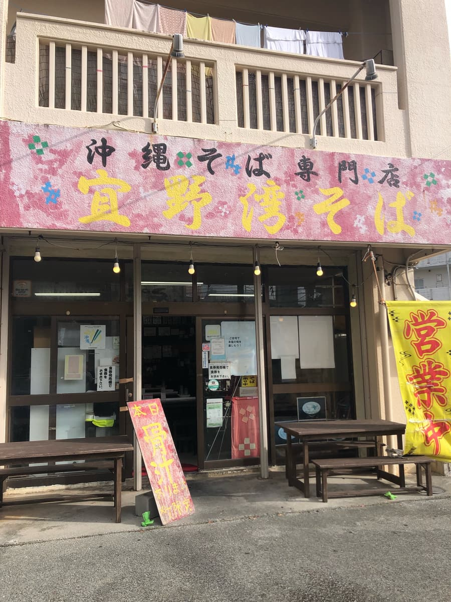
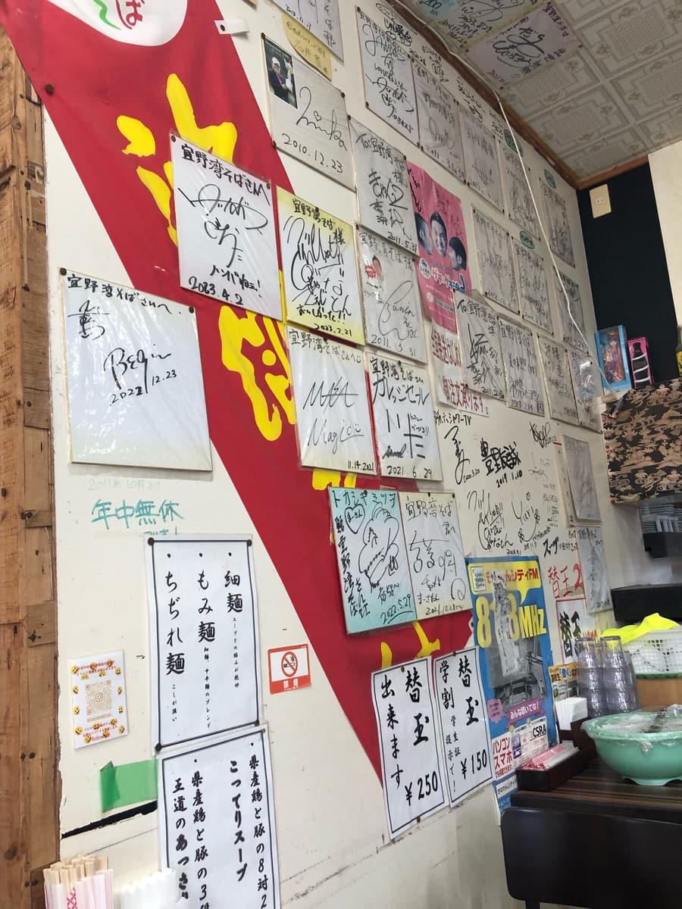
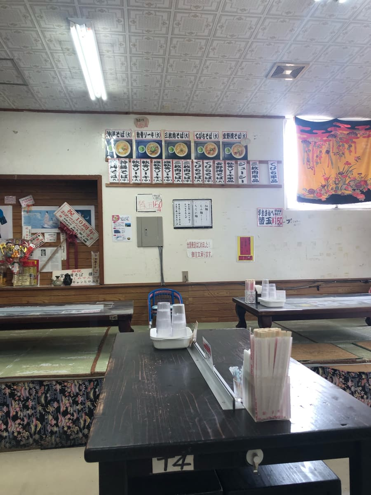
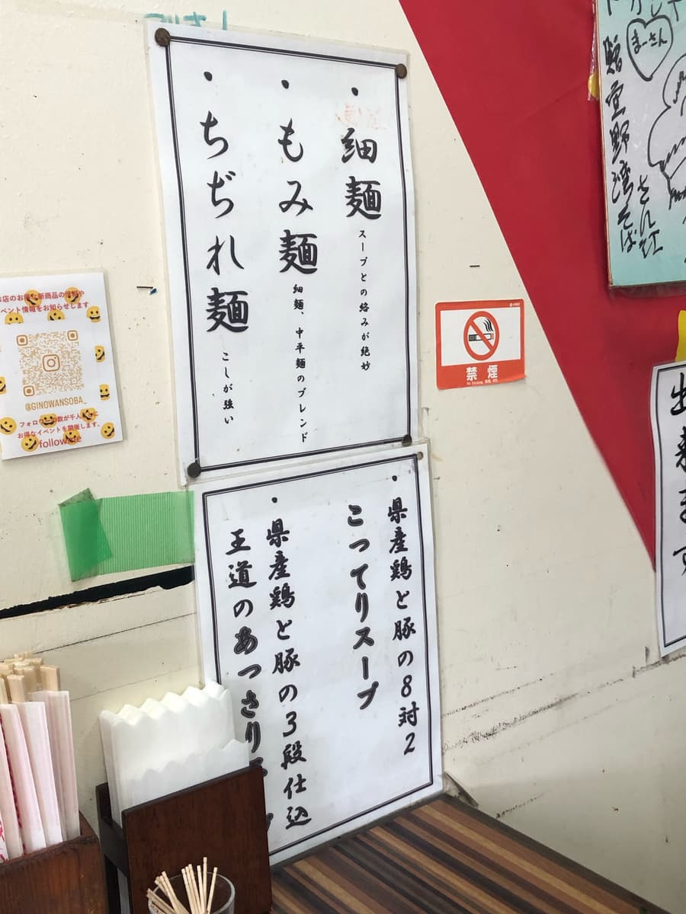
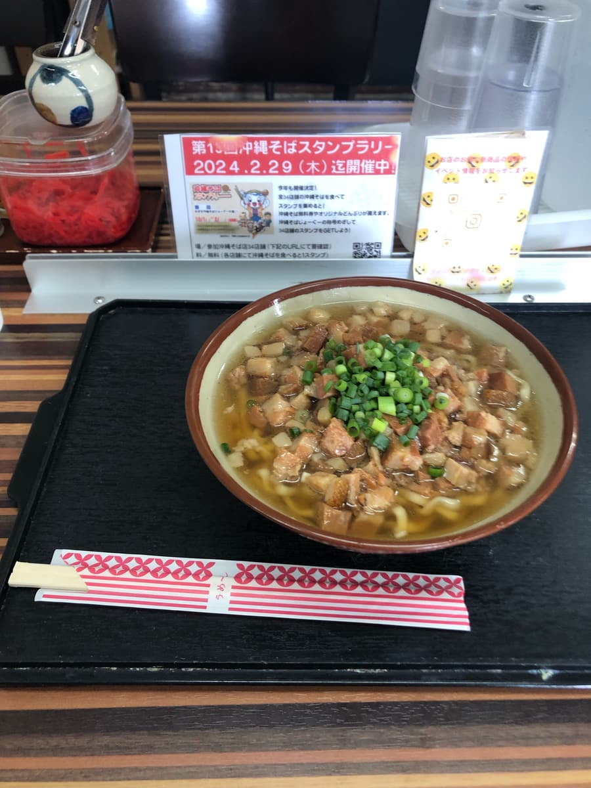
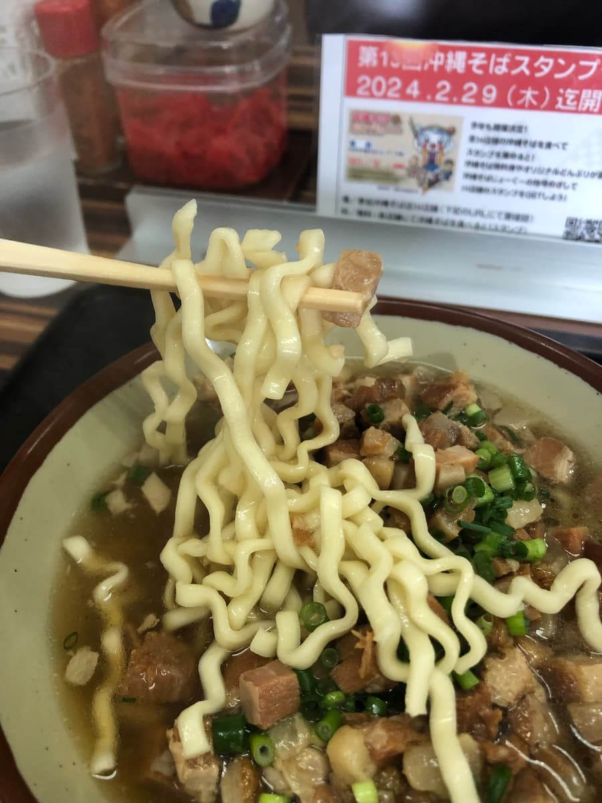
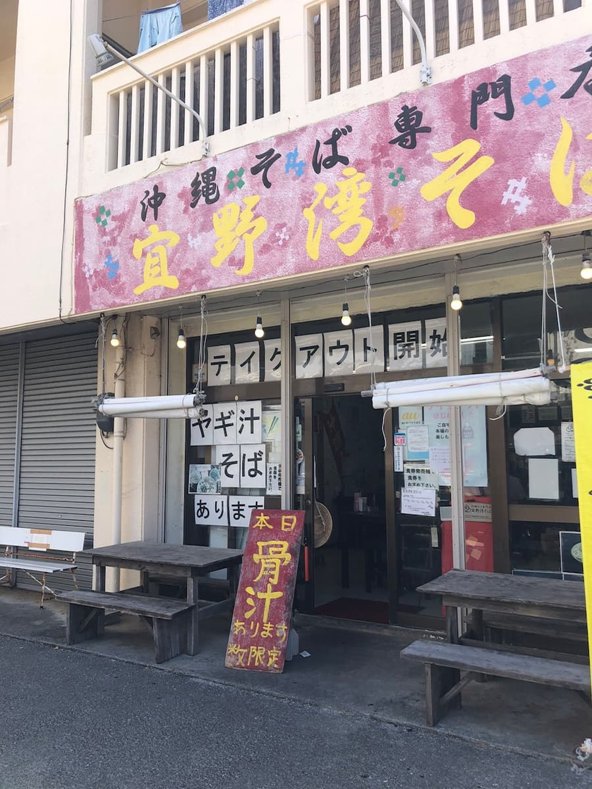
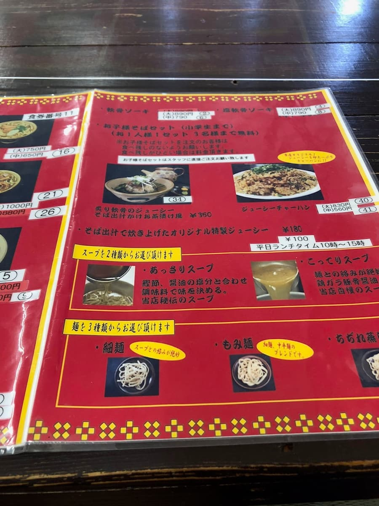
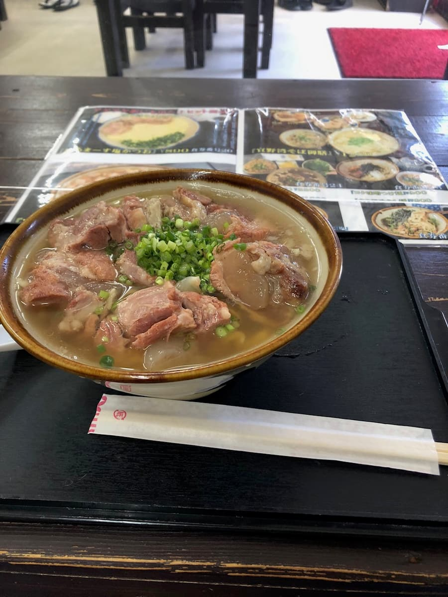

― 2번째 방문(2023년 11월) ―
2023년 11월에 먹었습니다. 이 가게는 '제13회 오키나와 소바 스탬프 랠리(2023.10.1~2024.2.29)'의 참가 가게로, 34곳 중 17번째 가게로 갔습니다😊

이 소바 가게는 호리에몬의 메일 매거진에서 알게 되어 전에 먹은 적이 있는데, 오랜만의 2번째입니다😁

가게 안에는 유명인의 사인이 잔뜩 붙어 있습니다. 지역에서 사랑받는 가게이자 유명 가게네요😊

전에는 손님이 있어서 가게 안 모습을 촬영하지 못했는데, 이번에는 점심이 지난 시간대라 아무도 없어서 촬영해 봤습니다. 주차장도 몇 대 세울 수 있고, 가게 안도 넓습니다.

이번에는 스탬프 랠리 책자에 소개되어 있던 '고로고로 소바'를 주문하기로 정해 두었는데, 국물은 '담백'을 선택. 면은 점원에게 상담했더니 '꼬불면'을 추천해 줘서 '꼬불면'으로 주문.
다만 먹은 뒤에 지난번 블로그를 확인해 보니, 그때도 똑같이 점원에게 추천받아서 '담백 국물'에 '꼬불면'을 선택했더라고요. 이번에는 다른 걸 시킬 걸 그랬다고 생각했습니다(;^ω^)

손님이 아무도 없었던 것도 있어서, 주문하자 금방 나왔습니다. 이 정도로 빠르면 간편하게 식사할 수 있어서 좋은 느낌이네요. 먼저 국물을 맛보려고 했는데, 국물 색이 진한 편이라 강한 맛이겠구나 생각하면서 한 모금.
역시 주문한 대로 '담백' 계열이지만, 맛도 확실히 있어서 맛있어요😋
이 국물 말인데요, 이번에 가게 안 벽에는 '현산 닭과 돼지의 3단계 손질. 정통의 담백한 국물'이라고 적혀 있어서 닭·돼지 육수 국물인 것 같은데, 지난번 블로그의 메뉴판에는 '가쓰오부시, 간장의 염분과 혼합 조미료'라고 되어 있었으니, 육수 베이스가 바뀐 걸까요?

꼬불면도 적당한 탄력이 있어서 평범하게 맛있어요😋 고명인 고기(삼겹살 조림(산마이니쿠), 살코기?)는 잘게 썰려 있는데, 중 사이즈였지만 꽤 양이 있었습니다.
평가(9점/15점): 평범하게 맛있습니다. 전에 먹었을 때보다 꽤 레벨이 높다고 생각했습니다. 이곳도 지역에서 사랑받는 가게니까 근처에 들르실 때 어떠세요.
면: ★★★☆☆（3）
수프: ★★★☆☆（3）
토핑: ★★★☆☆（3）
― 1번째 방문(2021년 9월) ―
2021년 9월에 먹었습니다. 이곳은 호리에몬 메일 매거진에 소개되어서 알게 되었습니다😄


호리에몬 메일 매거진에서 '소금 연골 소키 소바'를 먹었길래 같은 메뉴를 주문. 국물과 면을 고를 수 있는 타입이라, 이번에는 점원이 추천한 '담백 가쓰오 국물', '꼬불면'으로 갔습니다😄

국물과 매끈한 꼬불면이 잘 어우러져서 맛있어요😋 소키도 많이 들어 있어서 배불러졌습니다.
평가(9점/15점): 평범하게 맛있지만, 미식가인 호리에몬의 소개였던 만큼 기대치가 너무 높아서 허들을 너무 올렸네요^^; 추천 잠정 1위인 EIBUN 같은 임팩트는 없는 것 같다고 생각했습니다. 다만 이곳도 지역에서 사랑받는 가게니까 근처에 들르실 때 어떠세요.
면: ★★★☆☆（3）
수프: ★★★☆☆（3）
토핑: ★★★☆☆（3）